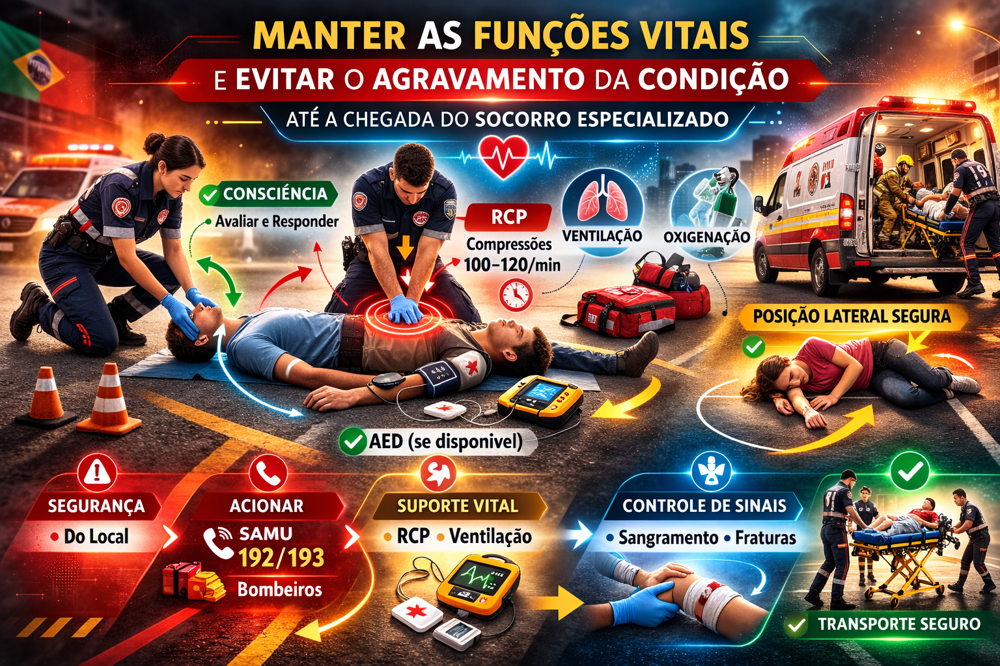
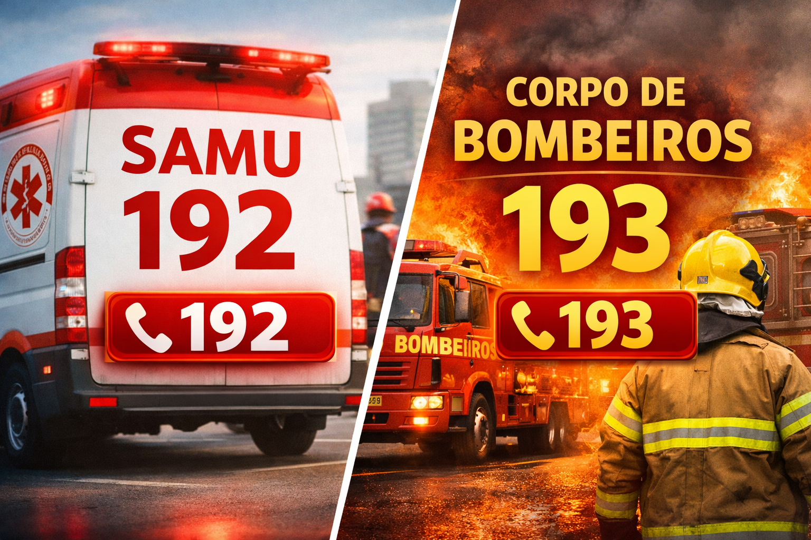
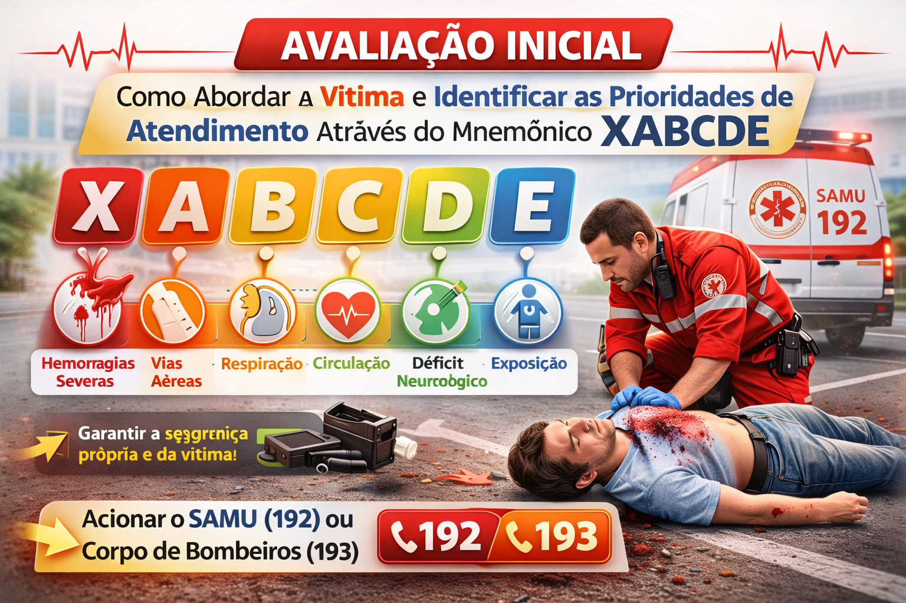
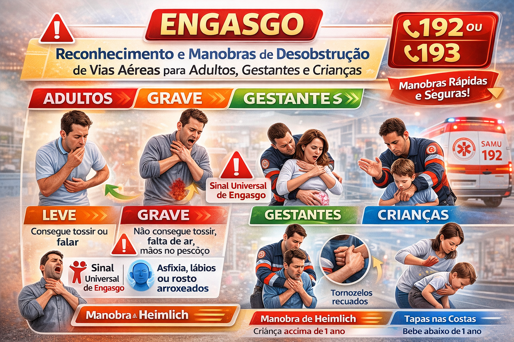
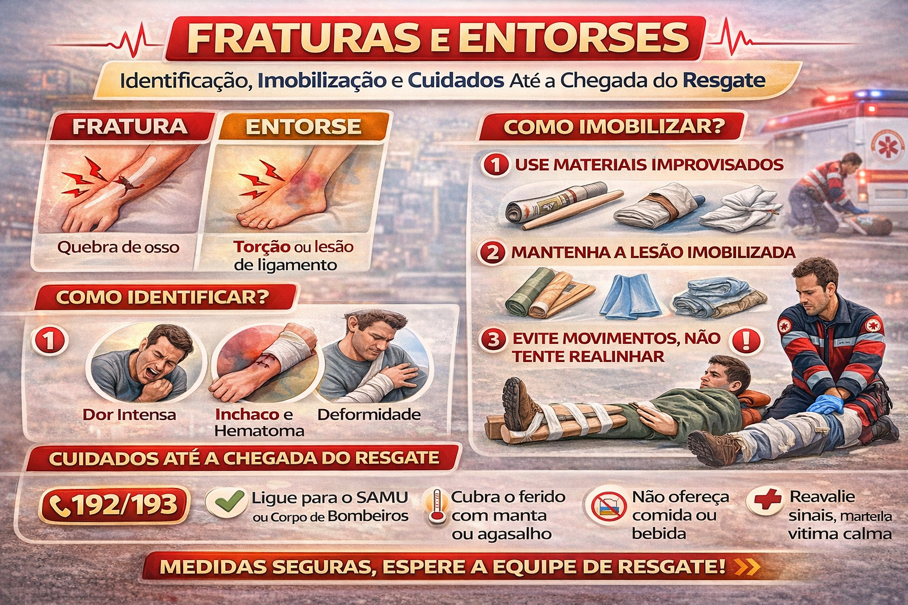

Sobre o curso
Este curso é destinado aos professores e colaboradores do Instituto Musical Vale e foi estruturado com referência na Lei Federal nº 13.722/2018 (Lei Lucas), na legislação aplicável do Estado e do Município de São Paulo e em protocolos atuais de primeiros socorros e Suporte Básico de Vida.
A capacitação prepara professores e colaboradores como primeiros respondentes treinados da instituição. O objetivo é reconhecer situações de urgência, agir dentro do treinamento recebido, manter a segurança e acionar corretamente o SAMU (192) ou o Corpo de Bombeiros (193) até a chegada do atendimento especializado.


Atualização técnica 2026
O conteúdo foi revisado à luz dos documentos técnicos do SAMU 192 São Paulo disponíveis em 2026, das Diretrizes AHA 2025 de RCP e ECC e das Diretrizes AHA/American Red Cross 2024 de Primeiros Socorros.
Estrutura das aulas
- Avaliação inicial: segurança da cena, resposta, respiração, ameaças imediatas à vida e uso do XABCDE em trauma.
- Engasgo: reconhecimento e manobras atualizadas para adulto, criança, gestante e bebê.
- RCP e DEA: reconhecimento da parada, compressões de qualidade, ventilação quando treinado e uso do DEA.
- Hemorragias: compressão direta, curativo compressivo e torniquete quando indicado e realizado por pessoa treinada.
- Fraturas e entorses: proteção da área, limitação de movimento, frio local e encaminhamento quando necessário.





Este material complementa o treinamento prático e não substitui a avaliação de profissionais de saúde. Em uma emergência, priorize a segurança da cena e siga as orientações do SAMU 192 ou do Corpo de Bombeiros 193.
Referências principais
- Lei Federal nº 13.722/2018 (Lei Lucas).
- Lei Estadual de São Paulo nº 15.661/2015, atualizada pela Lei nº 16.802/2018.
- Lei Municipal de São Paulo nº 18.084/2024.
- SAMU 192 / Secretaria Municipal da Saúde de São Paulo — documentos técnicos e Suporte Básico de Vida.
- American Heart Association — 2025 Guidelines for CPR and ECC.
- American Heart Association / American Red Cross — 2024 Guidelines for First Aid.